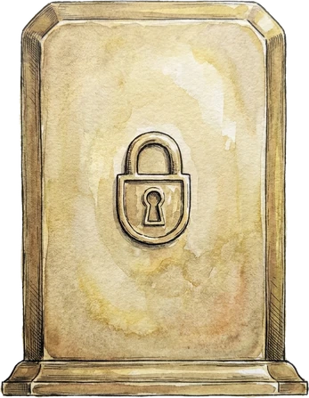
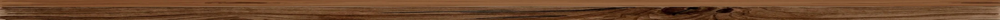
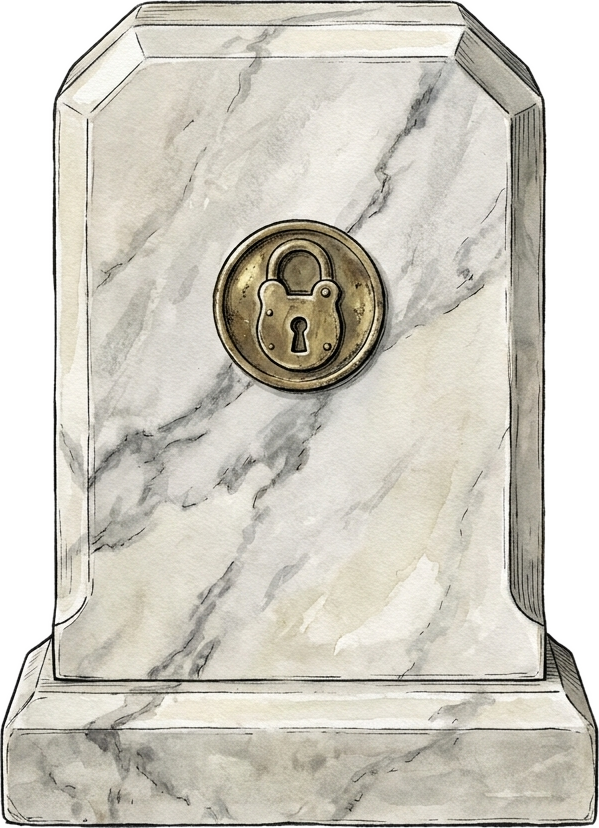
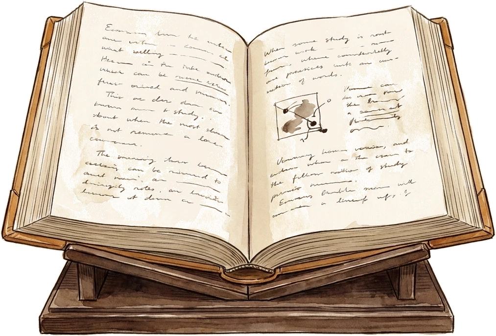
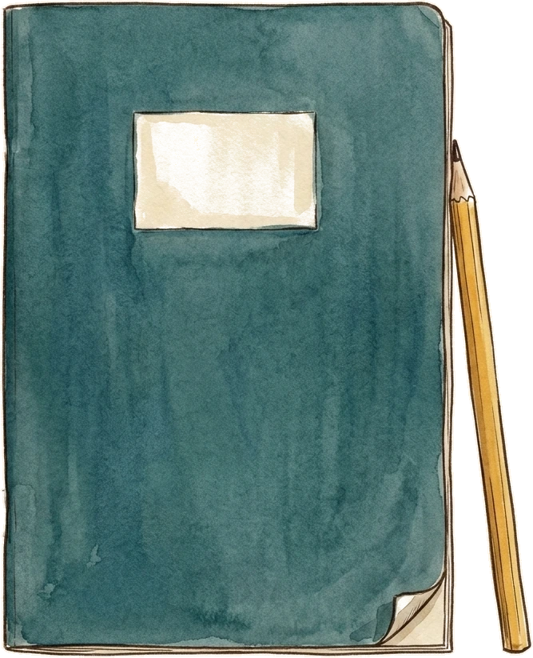
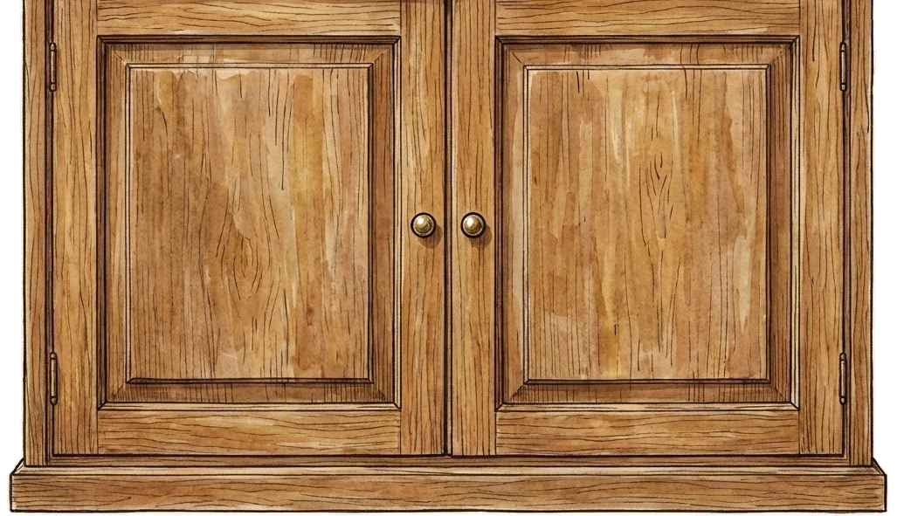

Everything you’re studying.
Nothing you’re not.



Three minutes to set up
Inside every lesson

- The lesson itself — written to your exact specification
- Six practice questions, mark-scheme style
- A five-question knowledge check to prove it stuck
- Flashcards for the bus home
- Read aloud — narration and a podcast for every lesson
Some subjects aren’t reading subjects
Maths, French, Spanish, German and English Language are built as workbooks instead: type your answer and StudyVault doesn’t just mark it wrong — it spots which mistake you made, and drills the fix.

Every subject, every board
Seventy-plus GCSE subjects. Over four thousand lessons. AQA, Pearson Edexcel, OCR, WJEC and Eduqas.
Hover any subject to see which boards we cover for it.
Planned backwards from exam day
The run-in
- Weeks 6–4 first pass — weakest topics first
- Weeks 3–2 past-paper drills, timed
- Final week flashcards + knowledge checks
- Night before sleep.
Put your exam dates in once and the planner fills the run-in for you, in 25-minute sittings — free, no account needed.
With your school

FOR SCHOOLS- Bespoke lessons for your classes, built from your own schemes of work
- Just your department? Create a class, share the code — your students are in before the bell
- Whole school? Students sign straight in with Google or Microsoft — no passwords to manage
- Progress teachers can actually see, class by class
Built and run by a serving classroom teacher.
A live demo class — click around, no sign-up, nothing to set up.
Questions, answered
The ones people actually ask.
Pick your subjects.
Maths, English and Science are already ticked — everyone sits those. Add your options; most students pick four. You can change these any time.
Which exam board?
Tell us the board for each subject — that decides the exact spec you’ll see.
Choose your topics.
Some subjects have options your school chose — History topics, set texts, religions. One quick question at a time.
Save your choices.
Free · everything will be exactly as you left it
Sign in.
Your subjects, boards and topics are saved to your account — sign in and it all comes back.
Everything will be exactly as you left it
StudyVault is an independent revision resource and is not affiliated with, endorsed by, or approved by AQA, Pearson Edexcel, OCR, WJEC or Eduqas. Exam board names and specification codes are used solely to identify the relevant courses. All lesson content is original to StudyVault.